Lab 2: SAML SP Access Guided Configuration (AGC) Lab
The purpose of this lab is to configure and test SAML Federation Services.
This lab will be configured in two parts.
Students will leverage Access Guided Configuration (AGC) to
configure the various aspects of a SAML Service Provider (SP), import and bind to
a SAML Identity Provider (IdP) and test SP-Initiated SAML Federation.
Objective:
- Gain an understanding of SAML Federation configurations and
their component parts through Access Guided Configuration (AGC)
- Gain an understanding of the access flow for IDP & SP Initiated SAML
Lab Requirements:
- All Lab requirements will be noted in the tasks that follow
- Estimated completion time: 25-30 minutes
Task 1 - Setup Lab environment
To access your dedicated student lab environment, you will need a web browser and Remote Desktop Protocol (RDP) client software. The web browser will be used to access the Unified Demo Framework (UDF) Training Portal. The RDP client will be used to connect to the jumphost, where you will be able to access the BIG-IP management interfaces (HTTPS, SSH).
Click DEPLOYMENT located on the top left corner to display the environment
Click ACCESS next to jumphost.f5lab.local

Select your RDP resolution.
The RDP client on your local host establishes a RDP connection to the Jumphost.
Login with the following credentials:
- User: f5lab\user1
- Password: user1
After successful logon the Chrome browser will auto launch opening the site https://portal.f5lab.local. This process usually takes 30 seconds after logon.
Click the Classes tab at the top of the page.
Scroll down the page until you see 202 - Federation on the left

Hover over tile SAML SP Access Guided Configuration(AGC) Lab. A start and stop icon should appear within the tile. Click the Play Button to start the automation to build the environment
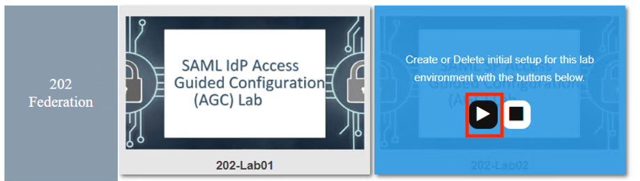
The screen should refresh displaying the progress of the automation within 30 seconds. Scroll to the bottom of the automation workflow to ensure all requests succeeded. If you you experience errors try running the automation a second time or open an issue on the Access Labs Repo.
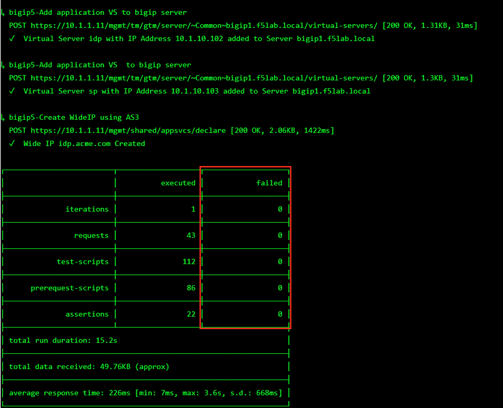
TASK 9: Review the Summary and Deploy
- Review the Summary, then scroll to the bottom of the window and click Deploy.
|
 |
- The application is now deployed click Finish.
|
| 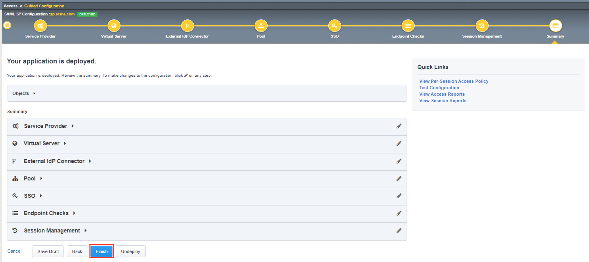 |
Review the Access Guided Confguration window, Status for sp.acme.com is
DEPLOYED.
|
| 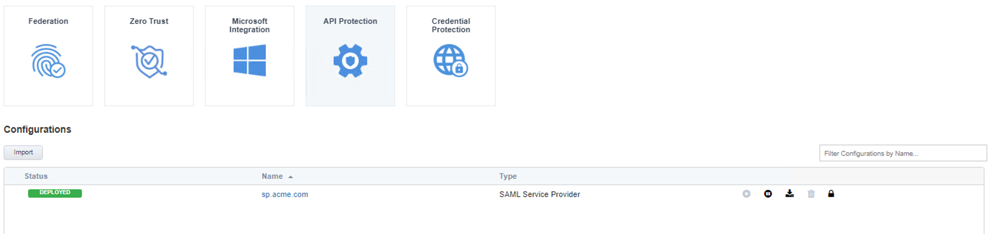 |
TASK: 10: Testing the SAML Service Provider (SP)
- Open Firefox from the Jumphost desktop and navigate to https://sp.acme.com
Note: If you have issues, open Firefox in a New Private Window (Incognito/Safe Mode)
Once the page loads, enter user1 for username and user1 for password in the
Secure Logon form and click the Logon button.
|
| 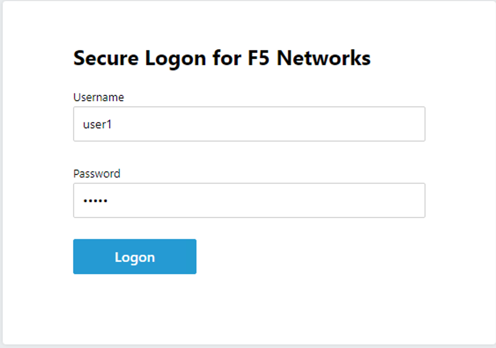 |
- The sp.acme.com application will now open if successfully configured.
|
| 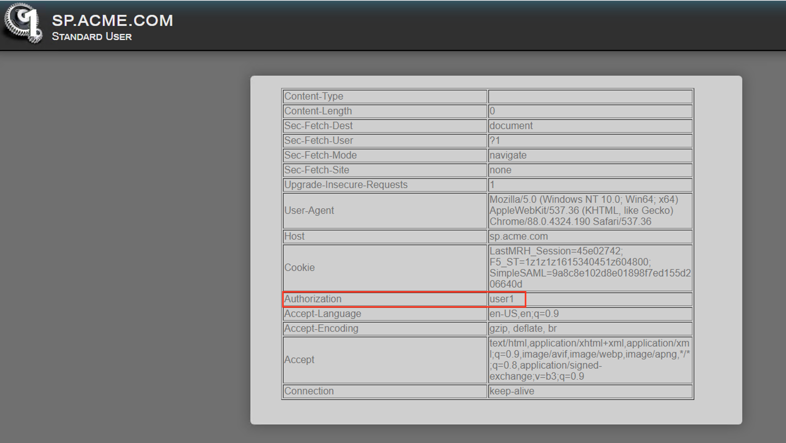 |
TASK 11: Lab CleanUp
- Navigate to Access -> Guided Configuration in the left-hand menu.
|
 |
- Click the Undeploy button
|
| 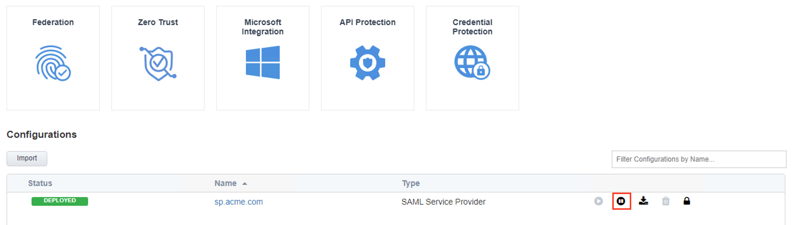 |
- Click OK when asked, “Are you sure you want to undeploy this configuration?”
|
 |
- Click the Delete button once the deployment is undeployed
|
| 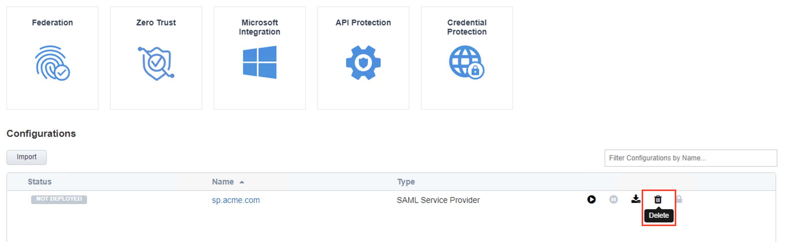 |
- Click OK when asked, “Are you sure you want to delete this configuration?”
|
 |
- The Configuration section should now be empty
|
| 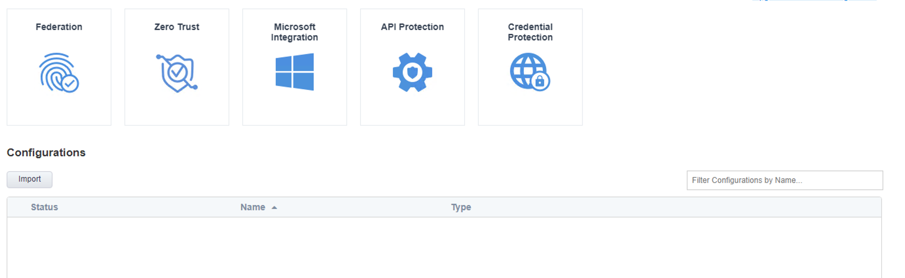 |
- Scroll down the page until you see 202 - Federation on the left
|
|
| 10. Hover over the tile SAML SP Access Guided Configuration(AGC) Lab. A start and stop
icon should appear within the tile. Click the Stop Button to start the automation to
delete any prebuilt objects |
| 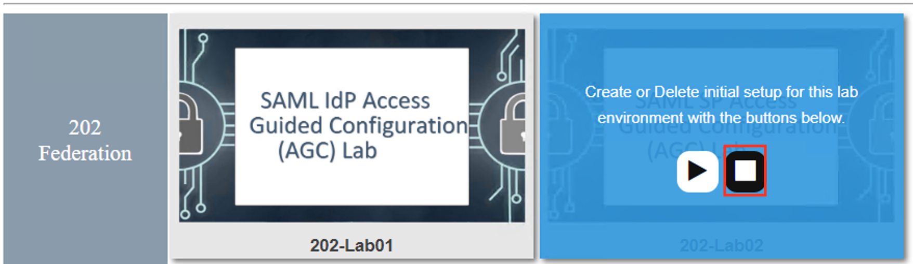 |
| 11. The screen should refresh displaying the progress of the automation within 30 seconds.
Scroll to the bottom of the automation workflow to ensure all requests succeeded.
If you you experience errors try running the automation a second time or open an issue on
the Access Labs Repo. |
| 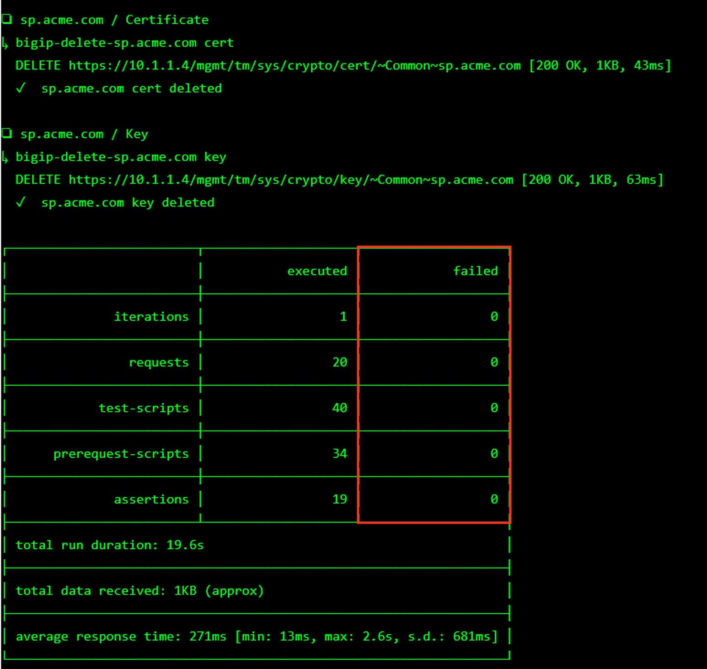 |
- This concludes Lab1.
|
 |

{kind=link}
{kind=link}
{kind=link}


{kind=link}
{kind=link}
{kind=link}
{kind=link}
{kind=link}
{kind=link}
{kind=link}
{kind=link}
{kind=link}
{kind=link}
{kind=link}
{kind=link}
{kind=link}
{kind=link}
{kind=link}